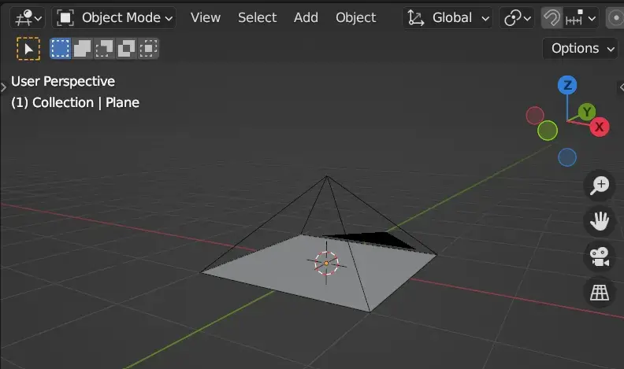
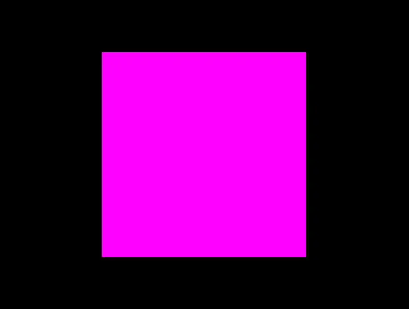
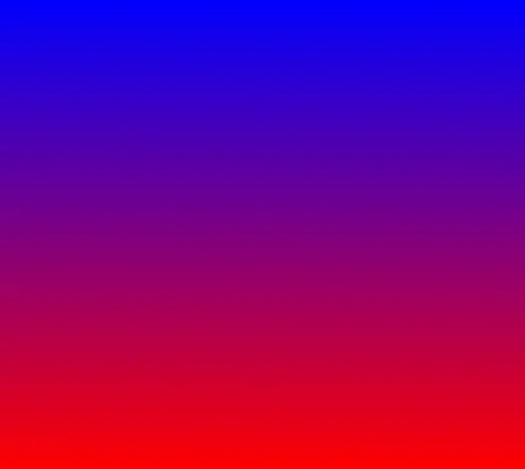
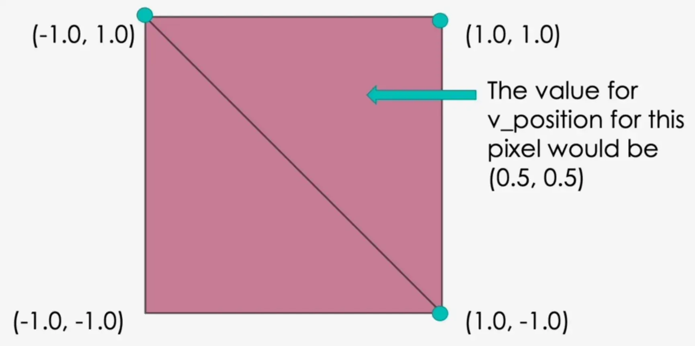
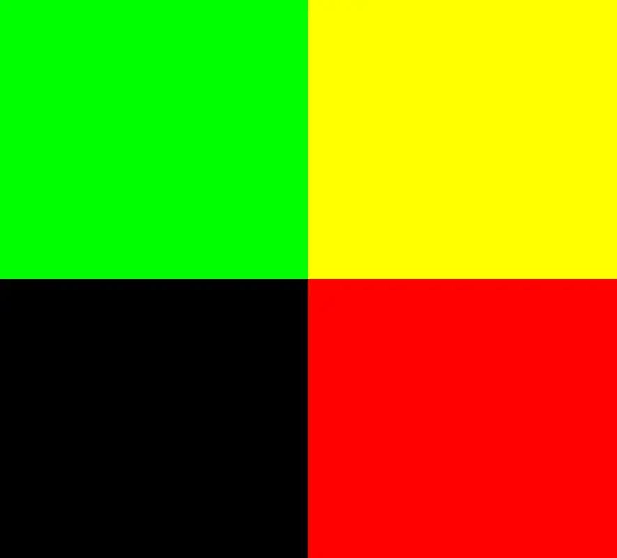
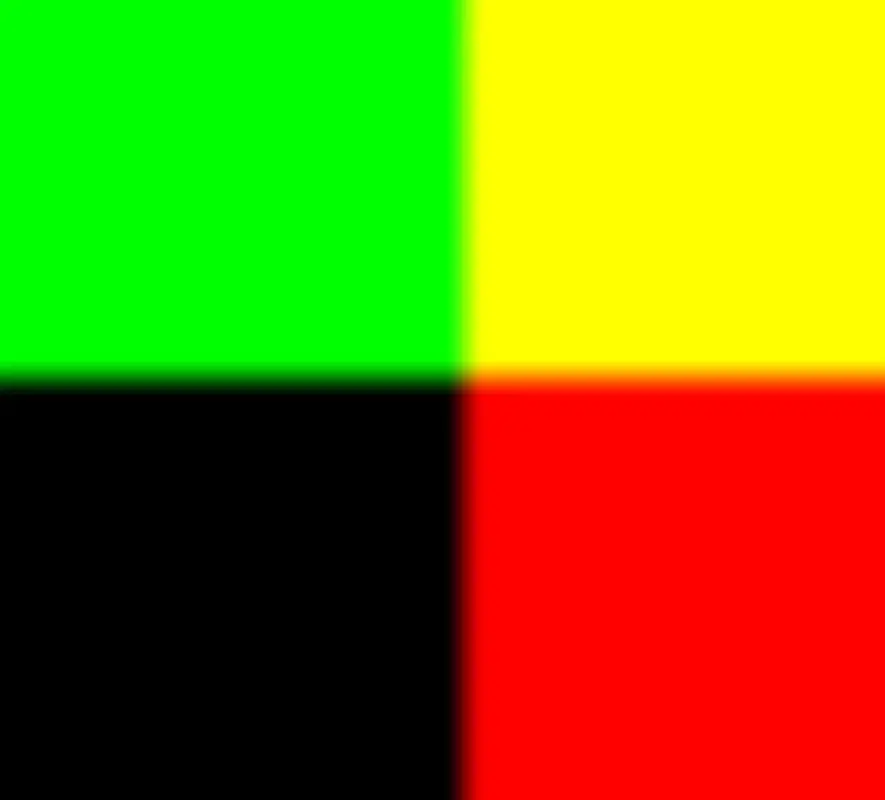
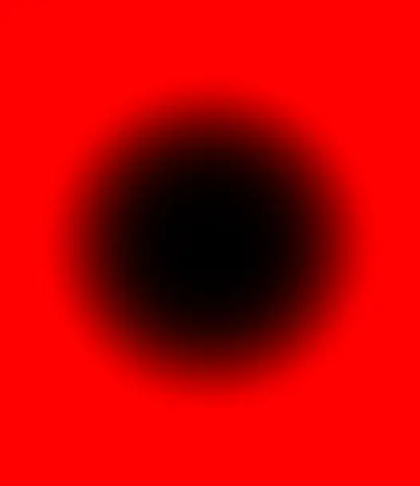
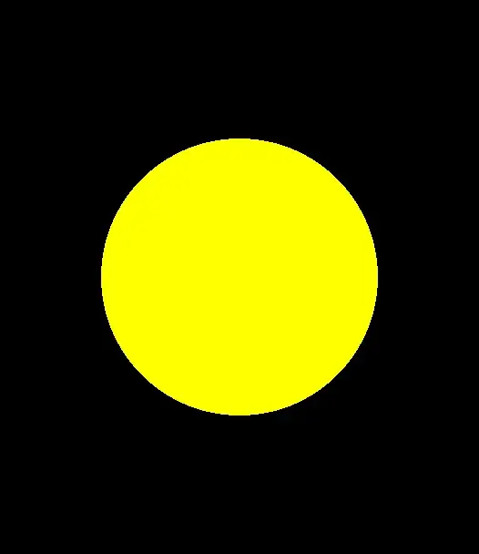

资源
前言
Shader（着色器） 是用于图形渲染的程序，用于描述如何在 GPU（图形处理单元）上处理图形数据。着色器是现代图形学的重要组成部分，允许开发者对 3D 图形、动画和效果进行高效且灵活的控制。
Shader 的分类
根据执行阶段的不同，Shader 主要分为以下几类：
顶点着色器（Vertex Shader）
作用：处理顶点数据（如位置、法线、纹理坐标）。
功能：负责将顶点从模型空间变换到屏幕空间，同时可以传递数据给后续阶段（如纹理坐标等）。
示例用途：旋转、缩放、位移顶点。
片段着色器（Fragment Shader）
作用：处理屏幕上每个像素的颜色。
功能：负责计算像素的最终颜色值，可以应用光照、纹理、透明度等。
示例用途：实现材质效果、光照模型、后处理效果。
几何着色器（Geometry Shader）
作用：可以生成或修改几何体。
功能：处理图元（如点、线、三角形）的形状，可以创建额外的顶点或完全改变输入的图元。
示例用途：实现细节层次（LOD）、生成草丛或粒子系统。
计算着色器（Compute Shader）
作用：不限定于图形渲染，用于在 GPU 上执行通用计算任务。
功能：可以用于并行计算，如模拟物理效果、处理大规模数据。
示例用途：粒子系统模拟、图像处理。
曲面细分着色器（Tessellation Shader）
包括：
细分控制着色器（Tessellation Control Shader） 细分评价着色器（Tessellation Evaluation Shader）
功能：用于细分曲面，增加几何体的细节。
示例用途：实现平滑曲面或动态细分网格。
着色器管线中的其他阶段
裁剪着色器（Clipping Shader） 光线追踪着色器（Raytracing Shader） 等。
Shader 的语言
Shader 通常使用专门的语言编写，这些语言被设计为能够高效地在 GPU 上运行。例如：
GLSL（OpenGL Shading Language）： 用于 OpenGL。HLSL（High-Level Shading Language）： 用于 DirectX。Cg（C for Graphics）： NVIDIA 推出的语言。ShaderLab（Unity）： Unity 的着色器语言，结合 HLSL 使用。
GLSL 的数据类型
GLSL 中的数据类型主要分为以下几类：
1. 标量类型（Scalar Types）
标量类型表示单一的数值，常用的标量类型包括：
float±3.4 × 10^38，精度为 6-9 位数字。int-2,147,483,648 到 2,147,483,647。booltrue 或 false。
2. 向量类型（Vector Types）
向量类型用于存储多个标量值，通常表示颜色、位置、法线等。GLSL 中有以下几种向量类型：
vec2(x, y)。vec3(x, y, z)。vec4(x, y, z, w)。
向量的元素可以是 float、int 或 bool，例如 ivec2 表示两个整数的向量，bvec4 表示四个布尔值的向量。
3. 矩阵类型（Matrix Types）
矩阵类型用于表示线性变换，通常用于3D图形变换。GLSL支持以下矩阵类型：
mat2mat3mat4
矩阵中的每个元素通常是float类型。矩阵在图形学中用于表示例如旋转、平移、缩放等变换。
4. 采样器类型（Sampler Types）
采样器类型用于表示纹理和其他图像数据的访问方式。常见的采样器类型有：
sampler2Dsampler3DsamplerCube
5. 特殊类型（Special Types）
void
6. 结构体（Structures）
GLSL 支持自定义结构体，可以将不同类型的数据打包成一个结构体。例如：
1 2 3 4 struct Material {vec3 color;float shininess;
结构体可以包含标量、向量、矩阵等类型的成员。
7. 数组（Arrays）
GLSL 支持数组类型，允许存储多个相同类型的元素。例如：
1 2 float values[10 ];vec3 positions[5 ];
数组的大小必须是常量表达式。
GLSL 的内置变量
顶点着色器的内建变量 顶点着色器用于处理每个顶点的数据，其内建变量用于传递信息到图形管线的后续阶段。
输入变量
gl_VertexID：当前顶点的索引（整型）。gl_InstanceID：当前实例的索引（用于实例化绘制）。
输出变量
gl_Position：顶点的裁剪空间坐标，必须由顶点着色器设置。gl_PointSize：绘制点图元时，指定点的大小（像素单位）。gl_ClipDistance[]：用户定义的剪裁平面距离，用于实现自定义剪裁逻辑。
片段着色器的内建变量 片段着色器用于处理每个片段的数据，内建变量帮助与栅格化阶段交互。
输入变量
gl_FragCoord：片段在窗口空间的坐标（x, y 为像素坐标，z 为深度值，w 为投影的倒数）。gl_FrontFacing：布尔值，指示当前片段是否属于正面（面向摄像机的多边形）。gl_PointCoord：在绘制点精灵时，提供片段在点图元中的归一化坐标。
输出变量
gl_FragDepth：片段的深度值，可用于手动调整深度测试的行为。
几何着色器的内建变量 几何着色器用于对图元（例如三角形或线段）进行操作，具有特殊的内建变量。
输入变量
gl_PrimitiveIDIn：输入图元的索引。gl_InvocationID：当前几何着色器实例的索引。
输出变量
gl_Position：输出顶点的裁剪空间坐标。gl_PrimitiveID：输出图元的索引。gl_Layer：指定输出图元的目标图层（用于多目标渲染）。gl_ViewportIndex：指定输出图元的目标视口。
课程
如此构建项目。
这么做相当于在 Blender 中创建如下的场景：

对于平面上的顶点 ( x , y , 0 ) (x, y, 0) ( x , y , 0 ) x ∈ [ − 1 , 1 ] x\in[-1, 1] x ∈ [ − 1 , 1 ] y ∈ [ − 1 , 1 ] y\in[-1,1] y ∈ [ − 1 , 1 ]
1 2 3 4 5 6 7 8 9 10 11 12 13 14 15 16 17 18 19 20 21 22 23 24 25 26 27 import bpyobject .select_all(action='SELECT' )object .delete(use_global=False )"OrthographicCamera" )type = 'ORTHO' 2 0.1 10 "OrthographicCamera" , camera_data)0 , 0 , 1 ) 2 , location=(0 , 0 , 0 )) object "Plane" 'CYCLES' 1000 1000
006 Your first shader
VSC 下安装 WebGL GLSL Editor 插件即可使得 .hlsl 可以高亮！
为了让 Shader 编写能够使用 VSC 的高亮，我决定修改项目的结构。
一个 Shader 由顶点着色器（vertex shader） 和片元着色器（fragment shader） 组成。
每个着色器文件必须包含函数 void main(){...}
如下代码将顶点着色器和片元着色器应用给 Shader 材质：
1 material = new THREE .ShaderMaterial ({ vertexShader : vShader, fragmentShader : fShader });
对于顶点着色器 ：
必须设置内置变量 gl_Position，从而处理 mesh 中的所有 vertex；
在 GLSL（OpenGL 着色语言）中，内置变量是一些特殊的变量，它们不需要声明即可使用。这些变量在着色器中扮演着重要的角色，作为硬件的输入和输出点。根据着色器的类型（顶点着色器或片元着色器），内置变量有所不同。
gl_Position 的类型为 vec4。
在 GLSL 中，modelViewMatrix 和 projectionMatrix 通常作为 uniform 变量传递给着色器，并用于将顶点位置从物体坐标系转换到最终的屏幕坐标。
1 2 3 void main() {gl_Position = projectionMatrix * modelViewMatrix * vec4 (position * 0.5 , 1.0 );
vec4(position * 0.5, 1.0) 让视口只有全屏的 1 2 \frac{1}{2} 2 1
vertex 在渲染中的变换过程：
position - localcoordinate（vertexPosition，这里是 vec4(position * 0.5, 1.0)）
Move to world space（与 modelViewMatrix 相乘）
Move to camera view（与 projectionMatrix 相乘）
Project on to screen（返回 gl_Position）
对于片元着色器 ：
必须设置内置变量 gl_FragColor；
gl_FragColor 的类型为 vec4，代表 RGBA，值 ∈ [ 0 . 0 , 1 . 0 ] \in[0.0, 1.0] ∈ [ 0 . 0 , 1 . 0 ]
1 2 3 void main() {gl_FragColor = vec4 (1.0 , 0.0 , 1.0 , 1.0 );
（无论什么顶点都返回粉紫色）
最终效果：

007 The vec class
使用如下方法可以给着色器传参（使用 uniforms）：
1 2 const uniforms = { u_color : { value : new THREE .Color (0x00FF00 ) } }; new THREE .ShaderMaterial ({ uniforms : uniforms, vertexShader : vShader, fragmentShader : fShader });
在片元着色器中，定义并接受这个参数（类型为 vec3）：
1 2 3 4 5 uniform vec3 u_color;void main() {gl_FragColor = vec4 (u_color, 1.0 ).grba;
最终效果：
008 Changing the color using the mouse
当 uniforms 里的值被改变时，着色器渲染的结果也会随之改变。
定义 uniforms，让其中的值与鼠标坐标和屏幕大小挂钩：
1 2 3 4 5 6 uniforms = {u_time : { value : 0.0 },u_mouse : { value : { x : 0.0 , y : 0.0 } },u_resolution : { value : { x : 0.0 , y : 0.0 } },u_color : { value : new THREE .Color (0x00FF00 ) },
设置鼠标移动监听：
1 2 3 4 5 6 7 8 if ('ontouchstart' in window ) {console .log ('touch device detected' );document .addEventListener ('touchmove' , move);else {console .log ('resize detected' );window .addEventListener ('resize' , onWindowResize, false );document .addEventListener ('mousemove' , move)
设定 uniforms.u_mouse.value.x 和 uniforms.u_mouse.value.y：
1 2 3 4 5 6 7 8 9 10 11 12 13 14 15 16 17 18 19 20 21 22 23 24 25 26 27 function move (evt ) {u_mouse .value .x = (evt.touches ? evt.touches [0 ].clientX : evt.clientX );u_mouse .value .y = (evt.touches ? evt.touches [0 ].clientY : evt.clientY );function onWindowResize (event ) {const aspectRatio = window .innerWidth / window .innerHeight ;let width, height;if (aspectRatio >= 1 ) {1 ;window .innerHeight / window .innerWidth ) * width;else {1 ;left = -width;right = width;top = height;bottom = -height;updateProjectionMatrix ();setSize (window .innerWidth , window .innerHeight );if (uniforms.u_resolution !== undefined ) {u_resolution .value .x = window .innerWidth ;u_resolution .value .y = window .innerHeight ;
在片元着色器中接收参数：
1 2 3 4 5 6 7 uniform vec2 u_mouse;uniform vec2 u_resolution;void main() {vec3 color = vec3 (u_mouse.x / u_resolution.x, 0.0 , u_mouse.y / u_resolution.y);gl_FragColor = vec4 (color, 1.0 );
009 Changing color with time
让颜色与颜色挂钩，这么定义uniforms：
1 2 3 uniforms = {u_time : { value : 0.0 },
在 animate() 中（相当于 Unity 中的 FixUpdate()，每帧执行一次，每秒执行 60 次），让 uniforms.u_time.value 的值不断随事件而递增。
1 uniforms.u_time .value += clock.getDelta ();
clock.getElapsedTime() 是 Three.js 库中的一个方法，用于获取自时钟对象（Clock）创建以来经过的时间（以秒为单位）。（所以会越闪越快……）clock.getDelta() 是 Three.js 库中的一个方法，用于计算上一帧和当前帧之间经过的时间（以秒为单位）。
设置片元着色器：
1 2 3 4 5 6 uniform float u_time;void main() {vec3 color = vec3 ((sin (u_time) + 1.0 ) / 2.0 , 0.0 , (cos (u_time) + 1.0 ) / 2.0 );gl_FragColor = vec4 (color, 1.0 );
010 Blending colors
1 2 3 4 5 6 7 uniform vec2 u_resolution;void main() {vec2 uv = gl_FragCoord .xy / u_resolution;vec3 color = mix (vec3 (1.0 , 0.0 , 0.0 ), vec3 (0.0 , 0.0 , 1.0 ), uv.y);gl_FragColor = vec4 (color, 1.0 );
gl_FragCoord是一个内置变量，包含当前处理的片元（像素）的窗口坐标 (x, y)。通过将 gl_FragCoord 的坐标除以u_resolution，得到了一个归一化的坐标 uv，范围在 (0,0) 到 (1,1) 之间。这种归一化允许我们在着色器中使用相对坐标来处理画面中的颜色渐变或图案。mix()函数用于在两个颜色之间进行线性插值 。vec3(1.0, 0.0, 0.0) 表示红色，vec3(0.0, 0.0, 1.0) 表示蓝色。通过对uv.y（归一化的 y 坐标，值在 0 到 1 之间）进行插值，color 将根据 y 坐标值从红色渐变到蓝色。即，y = 0 时颜色为红色，y = 1 时颜色为蓝色。

varying 变量用于在顶点着色器和片元着色器之间传递数据。顶点着色器将顶点的位置赋值给 v_position，使得片元着色器可以访问这个值。
对于这个平面，position 的取值示意图：

012 Using clamp
clamp(x, minVal, maxVal) 是一个用于限制值范围的函数。它会返回 x 本身，如果 x 在 minVal 和 maxVal 之间；如果 x 小于 minVal，则返回 minVal；如果 x 大于 maxVal，则返回 maxVal。
c l a m p ( x , m i n V a l , m a x V a l ) = { m i n V a l i f x < m i n V a l x i f m i n V a l ≤ x < m a x V a l m a x V a l i f x ≥ m a x V a l \mathrm{clamp}(x, \mathrm{minVal}, \mathrm{maxVal})=\begin{cases} \mathrm{minVal} & \text{if } x < \mathrm{minVal} \\ x & \text{if } \mathrm{minVal} \leq x < \mathrm{maxVal} \\ \mathrm{maxVal} & \text{if } x \geq \mathrm{maxVal} \end{cases}
c l a m p ( x , m i n V a l , m a x V a l ) = ⎩ ⎪ ⎨ ⎪ ⎧ m i n V a l x m a x V a l i f x < m i n V a l i f m i n V a l ≤ x < m a x V a l i f x ≥ m a x V a l
在上一节的基础上，编辑片元着色器，将值限制在 [ 0 , 1 ] [0,1] [ 0 , 1 ]
1 2 3 4 5 6 7 8 varying vec3 v_position;void main() {vec3 color = vec3 (0.0 );clamp (v_position.x, 0.0 , 1.0 );clamp (v_position.y, 0.0 , 1.0 );gl_FragColor = vec4 (color, 1.0 );
013 Using step and smoothstep
修改片元着色器：
1 2 3 4 5 6 7 8 varying vec3 v_position;void main() {vec3 color = vec3 (0.0 );step (0.0 , v_position.x);step (0.0 , v_position.y);gl_FragColor = vec4 (color, 1.0 );
color.r = step(0.0, v_position.x); 使用 step 函数对 v_position.x 进行处理。step 函数的作用是进行阈值判断，若 v_position.x 大于或等于 0.0，则返回 1.0，否则返回 0.0。
s t e p ( t , x ) = { 0 i f x < t 1 i f x ≥ t \mathrm{step}(t,x)=\begin{cases} 0 & \text{if } x < t \\ 1 & \text{if } x \geq t \end{cases}
s t e p ( t , x ) = { 0 1 i f x < t i f x ≥ t

1 2 3 4 5 6 7 8 varying vec3 v_position;void main() {vec3 color = vec3 (0.0 );smoothstep (0.0 , 0.1 , v_position.x);smoothstep (0.0 , 0.1 , v_position.y);gl_FragColor = vec4 (color, 1.0 );
smoothstep 函数的数学表达式通常定义为：
s m o o t h s t e p ( e d g e 0 , e d g e 1 , x ) = { 0 i f x < e d g e 0 t 2 ⋅ ( 3 − 2 ⋅ t ) i f e d g e 0 ≤ x < e d g e 1 1 i f x ≥ e d g e 1 \text{smoothstep}(edge0,edge1,x)=\begin{cases}0 & \mathrm{if\ } x < edge0\\ \mathrm{t}^2\cdot(3-2\cdot\mathrm{t}) & \mathrm{if\ }edge0\leq x < edge1 \\ 1 & \mathrm{if\ }x\geq edge1 & & \end{cases}
s m o o t h s t e p ( e d g e 0 , e d g e 1 , x ) = ⎩ ⎪ ⎨ ⎪ ⎧ 0 t 2 ⋅ ( 3 − 2 ⋅ t ) 1 i f x < e d g e 0 i f e d g e 0 ≤ x < e d g e 1 i f x ≥ e d g e 1
其中，t t t t = x − e d g e 0 e d g e 1 − e d g e 0 t = \frac{x - edge0}{edge1 - edge0} t = e d g e 1 − e d g e 0 x − e d g e 0

画一个圆（自己瞎画）：
1 2 3 4 5 6 7 varying vec3 v_position;void main() {vec3 color = vec3 (0.0 );smoothstep (0.0 , 0.5 , v_position.x * v_position.x + v_position.y * v_position.y);gl_FragColor = vec4 (color, 1.0 );

014 Drawing a circle
1 2 3 4 5 6 7 varying vec3 v_position;void main() {float inCircle = 1.0 - step (0.5 , length (v_position.xy));vec3 color = vec3 (1.0 , 1.0 , 0.0 ) * inCircle;gl_FragColor = vec4 (color, 1.0 );
length 函数来计算向量（v_position.xy）的长度。v_position 是一个三维向量，在这里我们只取它的前两个分量 x 和 y，表示二维平面上的一个点。length 函数返回该点到原点 (0, 0) 的距离。

015 Drawing a square
修改片元着色器，引入自定义函数 rect() 画一个矩形（长和宽均为 0.2，中心在原点）。
1 2 3 4 5 6 7 8 9 10 11 12 13 14 15 16 17 varying vec3 v_position;float rect(vec2 pt, vec2 size, vec2 center) {vec2 p = pt - center;vec2 halfsize = size / 2.0 ;float horz = step (-halfsize.x, p.x) - step (halfsize.x, p.x);float vert = step (-halfsize.y, p.y) - step (halfsize.y, p.y);return horz * vert;void main() {float inRect = rect(v_position.xy, vec2 (0.2 ), vec2 (0.0 ));vec3 color = vec3 (1.0 , 1.0 , 0.0 ) * inRect;gl_FragColor = vec4 (color, 1.0 );
016 Moving our shape
修改片元着色器，再画一个矩形。
1 2 3 4 5 6 7 8 9 10 11 12 13 14 15 16 17 18 varying vec3 v_position;float rect(vec2 pt, vec2 size, vec2 center) {vec2 p = pt - center;vec2 halfsize = size / 2.0 ;float horz = step (-halfsize.x, p.x) - step (halfsize.x, p.x);float vert = step (-halfsize.y, p.y) - step (halfsize.y, p.y);return horz * vert;void main() {float square1 = rect(v_position.xy, vec2 (0.3 ), vec2 (-0.5 , 0.0 ));float square2 = rect(v_position.xy, vec2 (0.4 ), vec2 (0.5 , 0.0 ));vec3 color = vec3 (1.0 , 1.0 , 0.0 ) * square1 + vec3 (0.0 , 1.0 , 0.0 ) * square2;gl_FragColor = vec4 (color, 1.0 );
017 Moving the shape over time
让矩形中心随时间不断变换，原理还是数学……极坐标方程。
x = ρ cos t x=\rho\cos t
x = ρ cos t
y = ρ sin t y=\rho\sin t
y = ρ sin t
018 Rotating the shape
下面这段代码将让矩形绕着 center 沿时间旋转，原理是让矩形平移回原点，乘以旋转矩阵，再平移回中心。
mat2 getRoationMatrix() 将计算出旋转矩阵：[ cos ( θ ) − sin ( θ ) sin ( θ ) cos ( θ ) ] \begin{bmatrix} \cos(\theta) & -\sin(\theta) \\ \sin(\theta) & \cos(\theta)\end{bmatrix} [ cos ( θ ) sin ( θ ) − sin ( θ ) cos ( θ ) ]
1 2 3 4 5 6 7 8 9 10 11 12 13 14 15 16 17 18 19 20 21 22 23 24 25 26 27 28 varying vec3 v_position;uniform float u_time;mat2 getRoationMatrix(float theta) {float s = sin (theta);float c = cos (theta);return mat2 (c, -s, s, c);float rect(vec2 pt, vec2 size, vec2 center) {vec2 p = pt - center;vec2 halfsize = size / 2.0 ;float horz = step (-halfsize.x, p.x) - step (halfsize.x, p.x);float vert = step (-halfsize.y, p.y) - step (halfsize.y, p.y);return horz * vert;void main() {vec2 center = vec2 (0.5 , 0.0 );mat2 mat = getRoationMatrix(u_time);vec2 pt = (mat * (v_position.xy - center)) + center;float inRect = rect(pt, vec2 (0.5 ), center);vec3 color = vec3 (1.0 , 1.0 , 0.0 ) * inRect;gl_FragColor = vec4 (color, 1.0 );
019 Changing the rotation centre
这段代码让矩形旋转的时候还缩放来缩放去：
1 2 3 4 5 6 7 8 9 10 11 12 13 14 15 16 17 18 19 20 21 22 23 24 25 26 27 28 29 30 31 32 33 varying vec3 v_position;uniform float u_time;mat2 getRoationMatrix(float theta) {float s = sin (theta);float c = cos (theta);return mat2 (c, -s, s, c);mat2 getScaleMatrix(float scale) {return mat2 (scale, 0.0 , 0.0 , scale);float rect(vec2 pt, vec2 anchor, vec2 size, vec2 center) {vec2 p = pt - center;vec2 halfsize = size / 2.0 ;float horz = step (-halfsize.x - anchor.x, p.x) - step (halfsize.x - anchor.x, p.x);float vert = step (-halfsize.y - anchor.y, p.y) - step (halfsize.y - anchor.y, p.y);return horz * vert;void main() {vec2 center = vec2 (0.5 , 0.0 );mat2 matr = getRoationMatrix(u_time);mat2 mats = getScaleMatrix((sin (u_time) + 1.0 ) / 3.0 + 0.5 );vec2 pt = (mats * matr * (v_position.xy - center)) + center;float inRect = rect(pt, vec2 (0.15 ), vec2 (0.3 ), center);vec3 color = vec3 (1.0 , 1.0 , 0.0 ) * inRect;gl_FragColor = vec4 (color, 1.0 );
rect() 中的 anchor 定义了锚点，实现矩形的平移。getScaleMatrix(） 定义了缩放矩阵：[ s 0 0 s ] \begin{bmatrix}s & 0 \\ 0 & s\end{bmatrix} [ s 0 0 s ]
020 Tilling
顶点着色器中，将 uv 信息传给片元着色器：
1 2 3 4 5 6 varying vec2 v_uv;void main() {gl_Position = projectionMatrix * modelViewMatrix * vec4 (position, 1.0 );
片元着色器中，使用 float tilecount = 6.0; 定义瓷砖数量，fract 函数用于提取输入参数的小数部分。
1 2 3 4 5 6 7 8 9 10 11 void main() {float tilecount = 6.0 ;vec2 center = vec2 (0.5 );mat2 mat = getRoationMatrix(u_time);vec2 p = fract (v_uv * tilecount);vec2 pt = (mat * (p - center)) + center;float inRect = rect(pt, vec2 (0.5 ), center);vec3 color = vec3 (1.0 , 1.0 , 0.0 ) * inRect;gl_FragColor = vec4 (color, 1.0 );
这说明 uv 的值 ∈ [ 0 , 1 ] \in[0, 1] ∈ [ 0 , 1 ]
021 Drawing circles
glsl 支持函数重载。
1 2 3 4 5 6 7 8 9 10 11 12 13 14 15 16 17 18 19 20 21 22 23 varying vec2 v_position;float circle(vec2 pt, vec2 center, float radius, float line_width) {vec2 p = pt - center;float len = length (p);float half_line_width = line_width / 2.0 ;return step (radius - half_line_width, len) - step (radius + half_line_width, len);float circle(vec2 pt, vec2 center, float radius, bool soften) {vec2 p = pt - center;float edge = (soften) ? radius * 0.5 : 0.0 ;return 1.0 - smoothstep (radius - edge, radius + edge, length (p));void main() {vec3 circle1 = vec3 (1.0 , 0.0 , 0.0 ) * circle(v_position.xy, vec2 (0.0 ), 0.2 , 0.02 );vec3 circle2 = vec3 (0.0 , 1.0 , 0.0 ) * circle(v_position.xy, vec2 (0.2 , 0.2 ), 0.2 , true );vec3 color = circle1 + circle2;gl_FragColor = vec4 (color, 1.0 );
022 Drawing lines
1 2 3 4 5 6 7 8 9 10 11 12 13 14 15 16 17 #define PI 3.1415926 varying vec2 v_uv;float line(float a, float b, float line_width, float edge_thickness) {float half_line_width = line_width / 2.0 ;return smoothstep (a - half_line_width - edge_thickness, a - half_line_width, b) - smoothstep (a + half_line_width, a + half_line_width + edge_thickness, b);void main() {vec3 line1 = vec3 (0.0 , 0.5 , 1.0 ) * line(v_uv.y, mix (0.3 , 0.6 , (sin (v_uv.x * 2.0 * PI) + 1.0 ) / 2.0 ), 0.02 , 0.002 );vec2 uv = gl_FragCoord .xy;vec3 line2 = vec3 (1.0 , 0.0 , 0.0 ) * line(uv.x, uv.y, 0.02 , 0.002 );vec3 color = line1 + line2;gl_FragColor = vec4 (color, 1.0 );
定义一个 float line(float a, float b, float line_width, float edge_thickness)：
a：线条的中心位置（通常对应于一个坐标系的某个值）。b：当前像素的坐标值，通常用于比较以判断该像素是否位于线条上。line_width：线条的总宽度。edge_thickness：线条的边缘厚度，用于控制线条的模糊程度。
mix(x, y, a); ：m i x ( x , y , a ) = ( 1 − a ) ⋅ x + a ⋅ y \text{mix}(x, y, a) = (1 - a) \cdot x + a \cdot y m i x ( x , y , a ) = ( 1 − a ) ⋅ x + a ⋅ y
line(v_uv.y, mix(0.3, 0.6, (sin(v_uv.x * 2.0 * PI) + 1.0) / 2.0), 0.02, 0.002); 定义了曲线 y = m i x ( 0 . 3 , 0 . 6 , sin ( 2 π x ) + 1 . 0 2 . 0 ) y=\mathrm{mix}\left(0.3, 0.6, \frac{\sin(2\pi x)+1.0}{2.0}\right) y = m i x ( 0 . 3 , 0 . 6 , 2 . 0 sin ( 2 π x ) + 1 . 0 ) line(uv.x, uv.y, 0.02, 0.002); 绘制了曲线 y = x y=x y = x
023 Combining elements
1 2 3 4 5 6 7 8 9 10 11 12 13 14 15 16 17 18 19 20 21 22 23 24 25 26 27 28 29 30 31 32 33 34 35 36 37 38 39 40 41 42 43 44 45 46 47 48 49 50 #define PI 3.1415926 #define PI2 6.2831853 varying vec2 v_uv;uniform float u_time;float sweep(vec2 pt, vec2 center, float radius, float line_width, float edge_thickness) {vec2 d = pt - center;float theta = u_time * 2.0 ;vec2 p = vec2 (cos (theta), -sin (theta)) * radius; float h = clamp (dot (d, p) / dot (p, p), 0.0 , 1.0 ); float l = length (d - p * h); float gradient = 0.0 ;const float gradient_angle = PI * 0.5 ;if (length (d) < radius) { float angle = mod (theta + atan (d.y, d.x), PI2);clamp (gradient_angle - angle, 0.0 , gradient_angle) / gradient_angle * 0.5 ;return gradient + 1.0 - smoothstep (line_width, line_width + edge_thickness, l);float circle(vec2 pt, vec2 center, float radius, float line_width, float edge_thickness) {float len = length (pt);float result = smoothstep (radius - line_width / 2.0 - edge_thickness, radius - line_width / 2.0 , len) - smoothstep (radius + line_width / 2.0 , radius + line_width / 2.0 + edge_thickness, len);return result;float line(float a, float b, float line_width, float edge_thickness) {float half_line_width = line_width / 2.0 ;return smoothstep (a - half_line_width - edge_thickness, a - half_line_width, b) -smoothstep (a + half_line_width, a + half_line_width + edge_thickness, b);void main() {vec3 axis_color = vec3 (0.8 );vec3 color = line(v_uv.y, 0.5 , 0.002 , 0.001 ) * axis_color;0.5 , 0.002 , 0.001 ) * axis_color;vec2 (0.5 ), 0.3 , 0.002 , 0.001 ) * axis_color;vec2 (0.5 ), 0.2 , 0.002 , 0.001 ) * axis_color;vec2 (0.5 ), 0.1 , 0.002 , 0.001 ) * axis_color;vec2 (0.5 ), 0.3 , 0.003 , 0.001 ) * vec3 (0.0 , 0.5 , 1.0 );gl_FragColor = vec4 (color, 1.0 );
下面这段代码将画出雷达坐标轴，由两条直线和三个圆组成：
1 2 3 4 5 6 7 vec3 axis_color = vec3 (0.8 );vec3 color = line(v_uv.y, 0.5 , 0.002 , 0.001 ) * axis_color;0.5 , 0.002 , 0.001 ) * axis_color;vec2 (0.5 ), 0.3 , 0.002 , 0.001 ) * axis_color;vec2 (0.5 ), 0.2 , 0.002 , 0.001 ) * axis_color;vec2 (0.5 ), 0.1 , 0.002 , 0.001 ) * axis_color;vec2 (0.5 ), 0.3 , 0.003 , 0.001 ) * vec3 (0.0 , 0.5 , 1.0 );
定义 float sweep(vec2 pt, vec2 center, float radius, float line_width, float edge_thickness) 函数显示扫描效果。
pt：当前点的坐标（一个二维向量）。center：扇形的中心点坐标。radius：扇形的半径。line_width：描述扇形边缘粗细的线宽。edge_thickness：描述扇形边缘羽化的厚度。
024 Showing a polygon
1 2 3 4 5 6 7 8 9 10 11 12 13 14 15 16 17 18 19 20 21 22 23 24 25 26 27 28 29 30 31 32 33 #define PI2 6.28318530718 uniform vec2 u_resolution;float circle(vec2 pt, vec2 center, float radius, float line_width, float edge_thickness) {float len = length (pt);float result = smoothstep (radius - line_width / 2.0 - edge_thickness, radius - line_width / 2.0 , len) - smoothstep (radius + line_width / 2.0 , radius + line_width / 2.0 + edge_thickness / 2.0 , len);return result;float polygon(vec2 pt, vec2 center, float radius, int sides, float rotate, float edge_thickness) {float theta = atan (pt.y, pt.x) + rotate;float rad = PI2 / float (sides);float d = cos (floor (theta / rad + 0.5 ) * rad - theta) * length (pt);return 1.0 - smoothstep (radius, radius + edge_thickness, d);void main(void ) {vec2 pt = gl_FragCoord .xy;vec2 center = u_resolution / 2.0 ;float radius = 80.0 ;vec3 color = polygon(pt, center, radius, 3 , 0.0 , 1.0 ) * vec3 (0.17 , 1.0 , 0.0 );1.0 , 1.0 ) * vec3 (1.0 , 0.0 , 0.0 );gl_FragColor = vec4 (color, 1.0 );
定义了一个画多边形的函数 float polygon(vec2 pt, vec2 center, float radius, int sides, float rotate, float edge_thickness)，通过计算：
pt: 当前像素的坐标（使用二维向量表示）。center: 多边形的中心位置（二维向量）。radius: 多边形的半径。sides: 多边形的边数（例如：3 代表三角形，4 代表正方形等）。rotate: 旋转角度，用于旋转多边形。edge_thickness：边缘厚度，用于控制多边形边缘的模糊程度。
定义参数 ：设点 p t pt p t ( x , y ) (x, y) ( x , y ) c e n t e r center c e n t e r s i d e s sides s i d e s r o t a t e rotate r o t a t e e d g e _ t h i c k n e s s edge\_thickness e d g e _ t h i c k n e s s
计算角度 ：θ = a r c t a n ( y − c e n t e r y , x − c e n t e r x ) + r o t a t e \theta = \text{arctan}(y - center_y, x - center_x) + rotate θ = a r c t a n ( y − c e n t e r y , x − c e n t e r x ) + r o t a t e
计算每个边的角度 ：r a d = 2 π s i d e s rad = \frac{2\pi}{sides} r a d = s i d e s 2 π
计算到边界的距离模调函数 ：k = ⌊ θ r a d + 0 . 5 ⌋ k = \left\lfloor \frac{\theta}{rad} + 0.5 \right\rfloor k = ⌊ r a d θ + 0 . 5 ⌋
计算距离 d d d ：d = cos ( k ⋅ r a d − θ ) ⋅ ( x − c e n t e r x ) 2 + ( y − c e n t e r y ) 2 d = \cos(k \cdot rad - \theta) \cdot \sqrt{(x - center_x)^2 + (y - center_y)^2} d = cos ( k ⋅ r a d − θ ) ⋅ √ ( x − c e n t e r x ) 2 + ( y − c e n t e r y ) 2
025 A brick pattern
下面的代码将画一个砖缝图案：
1 2 3 4 5 6 7 8 9 10 11 12 13 14 15 16 17 18 19 20 21 22 23 varying vec2 v_uv;float line(float x, float y, float line_width, float edge_thickness) {float half_line_width = line_width * 0.5 ;return smoothstep (x - half_line_width - edge_thickness, x - half_line_width, y) - smoothstep (x + half_line_width, x + half_line_width + edge_thickness, y);float brick(vec2 pt, float mortar_height, float edge_thickness) {float result = line(pt.y, 0.0 , mortar_height, edge_thickness);0.5 , mortar_height, edge_thickness);1.0 , mortar_height, edge_thickness);if (pt.y > 0.5 )fract (pt.x + 0.5 );0.5 , mortar_height, edge_thickness);return result;void main(void ) {vec2 uv = fract (v_uv * 1.0 );vec3 color = mix (vec3 (0.75 , 0.5 , 0.25 ), vec3 (0.75 , 0.75 , 0.75 ), brick(uv, 0.05 , 0.001 ));gl_FragColor = vec4 (color, 1.0 );
通过修改 vec2 uv = fract(v_uv * 10.0);，生成平铺图案：
026 Whats all that noise
下面这段代码将模拟电视机的噪声。
1 2 3 4 5 6 7 8 9 10 11 12 13 14 varying vec2 v_uv;uniform float u_time;float random (vec2 st, float seed) {const float a = 12.9898 ;const float b = 78.233 ;const float c = 43758.543123 ;return fract (sin (dot (st, vec2 (a, b)) + seed) * c);void main() {vec3 color = random(v_uv, u_time) * vec3 (1.0 );gl_FragColor = vec4 (color, 1.0 );
如果将 a、b 设成 0 或是将 c 设成较小的数字，可能出现奇怪的规则图案。
下面的噪声生成算法将生成格子形的噪声。
1 2 3 4 5 6 7 8 9 10 11 12 13 14 15 16 17 18 19 20 21 22 23 24 25 26 27 28 29 30 31 32 33 34 35 varying vec2 v_uv;float random(vec2 st) {return fract (sin (dot (st, vec2 (12.9898 , 78.233 ))) * 43758.5453123 );float noise(vec2 st) {vec2 i = floor (st);vec2 f = fract (st);float a = random(i);float b = random(i + vec2 (1.0 , 0.0 ));float c = random(i + vec2 (0.0 , 1.0 ));float d = random(i + vec2 (1.0 , 1.0 ));vec2 u = f * f * (3.0 - 2.0 * f);return mix (a, b, u.x) +1.0 - u.x) +void main() {vec2 st = v_uv;vec2 pos = vec2 (st * 88.0 );float n = noise(pos);gl_FragColor = vec4 (vec3 (n), 1.0 );
027 Using noise to create a fire shader
设计火焰 Shader 的步骤：
A simple noise function
一个简单的噪声函数
Move the noise in the y direction over time
随时间沿 y y y
Layer multiple passes of the noise function
对噪声函数的多个通道进行分层
Add an alpha layer to crop the result
添加 Alpha 图层以裁剪结果
028 Using noise to create wood and marble
这里调整了结构，把 uniform 的信息存到了一个 json 文件中。
从 s3-us-west-2.amazonaws.com/s.cdpn.io/2666677/MyShaderChunks.js 中可以得到 noise.glsl，使用 THREE.ShaderChunk 扩展已有材质，这样就可以在其它 .glsl 文件中引入：
使用里面的噪声函数，生成一个木质纹理：
如果使用以下的 fragmentShader.glsl：
1 2 3 4 5 6 7 8 9 10 11 12 13 14 15 16 17 18 19 20 21 22 23 24 varying vec3 vPosition;#include <noise> void main() {vec2 p = vPosition.xy;float scale = 800.0 ;vec3 color;bool marble = true ;if (marble) {float d = perlin(p.x, p.y) * scale;float u = p.x + d;float v = p.y + d;float noise = perlin(p.x + d, p.y + d);vec3 (0.6 * (vec3 (2.0 * noise) - vec3 (noise * 0.1 , noise * 0.2 - sin (u / 30.0 ) * 0.1 , noise * 0.3 + sin (v / 40.0 ) * 0.2 )));else {vec3 (perlin(p.x, p.y));gl_FragColor = vec4 (color, 1.0 );
将得到大理石纹理：
029 A simple use of a texture image
下面的代码将纹理贴图不断自旋：
在 THREE.js 中，可通过如下语句给 Shader 传递一个 2D 纹理贴图：
1 uniforms.u_tex .value = new THREE .TextureLoader ().load ("XXX" );
sampler2D
定义 ：sampler2D 是一种数据类型，用于表示一个二维纹理的采样器。功能 ：它可以存储纹理对象的引用，并且允许在着色器中对该纹理进行采样。通过 sampler2D 类型的变量，可以使用纹理相关函数（如 texture2D）来获取纹理上的颜色值。声明 ：通常在着色器的 uniform 变量中声明。例如，uniform sampler2D u_tex; 表示一个名为 u_tex 的二维纹理采样器。
texture2D
定义 ：texture2D 是一个函数，用于从一个 sampler2D 类型的纹理中获取颜色值。参数：这个函数通常接受两个参数：
sampler2D 变量（例如：u_tex），指明要采样的纹理。纹理坐标（vec2）表示要从纹理中获取颜色的具体位置。
返回值 ：texture2D 返回一个颜色向量，通常是 vec4 类型，表示纹理中指定位置的颜色（包含 RGB 颜色和 alpha 透明度值）。
030 Ripple the image
在图像中心产生波动效果。
031 Blend between images
点击箭头按钮（<div id="prev"> 和 <div id="next">）即可波动地展示下一张图片。
032 Create a texture from text
这里项目引入了：
1 <script src ="https://s3-us-west-2.amazonaws.com/s.cdpn.io/2666677/toon3d.js" > </script >
看样子是基于 THREE.js 的一个插件。
一个 CanvasText 类包含 4 个参数：
A THREE.js scene
A text string
A config object
A material
给 CanvasText上材质：
1 2 3 4 5 6 7 8 9 10 11 12 13 14 const uniforms2 = {u_time : { value : 0.0 },u_duration : { value : 2.0 },u_twirls : { value : 7 }const material2 = new THREE .ShaderMaterial ( {uniforms : uniforms2,vertexShader : vshader,fragmentShader : fshader2,transparent : true const canvasText = new CanvasText (scene, info[1 ], config, material2);
1 2 3 4 5 6 7 8 9 10 11 12 13 14 15 16 17 18 19 20 21 22 23 24 25 26 27 28 29 30 31 32 33 uniform sampler2D u_tex;uniform float u_time;uniform float u_duration;uniform float u_twirls;varying vec2 vUv;vec4 twirl(sampler2D tex, vec2 uv, float time) {if (time < 0.0 ) time = 0.0 ;vec2 center = vec2 (0.5 );vec2 tc = uv - center;float dist = length (tc);if (dist < 0.5 ) {float delta = (0.5 - dist) / 0.5 ;float theta = delta * delta * time * u_twirls;float s = sin (theta);float c = cos (theta);mat2 mat = mat2 (c, s, -s, c);vec4 color = texture2D (tex, tc);mix (0.0 , color.a, min (u_time, 1.0 ));return color;void main(void ){gl_FragColor = twirl(u_tex, vUv, u_duration - u_time);
033 Turning a box into a sphere
顶点着色器用于修改模型顶点的位置，这是通过将模型视图矩阵和投影矩阵应用到齐次坐标（三位观察的过程，设置 gl_Position）来实现的。
创建一个正方体：
1 geometry = new THREE .BoxGeometry (30 , 30 , 30 , 10 , 10 , 10 );
编辑顶点着色器：
1 2 3 4 5 6 7 8 9 10 11 uniform float u_time;uniform float u_radius;void main() {float delta = ((sin (u_time) + 1.0 ) / 2.0 );vec3 v = normalize (position) * u_radius; vec3 pos = mix (position, v, delta);gl_Position = projectionMatrix * modelViewMatrix * vec4 (pos, 1.0 );
034 Using the THREE.js lighting chunks
Adding lighting -cheatsheet 添加灯光–操作手册
Make sure to add at least one light to your scene
确保在场景中至少添加一个灯光
Add the THREE.UniformsLib uniforms, common and lights
1 2 3 4 const uniforms = THREE .UniformsUtils .merge ( [THREE .UniformsLib [ "common" ],THREE .UniformsLib [ "lights" ]
Make sure lights: true is added to the ShaderMaterial properties
确保在着色器材质属性中添加 lights: true
1 2 3 4 5 6 const material = new THREE .ShaderMaterial ( {uniforms : uniforms,vertexShader : vshader,fragmentShader : fshader,lights : true
In the vertex shader include the chunks common and lights_pars begin
在顶点着色器中加入 common 和 lights_pars 开始块
1 2 #include <common> #include <lights_pars_begin>
In the main function include the relevant chunks
在主函数中包含相关块
Use the values vlightFront, vlightBack and ambientlightColor passing these to the fragment shader
使用 vlightFront、vlightBack 和 ambientlightColor 值，并将这些值传递给片段着色器
通过下面的代码可以引入 THREE.js 的光照 shader chunk：
1 2 3 4 5 6 7 8 THREE .ShaderChunk .simple_lambert_vertex = ` vec3 vLightFront, vLightBack; #include <beginnormal_vertex> #include <defaultnormal_vertex> #include <begin_vertex> #include <project_vertex> #include <lights_lambert_vertex> `
下面的代码创建灯光：
1 2 3 4 5 const ambient = new THREE .HemisphereLight (0x444444 , 0x111111 , 1 );const light = new THREE .DirectionalLight (0xcccccc , 0.8 );position .set (0 ,6 ,2 );add (ambient);add (light);
在顶点着色器获取光照情况：
1 2 3 4 5 6 7 8 9 10 11 12 13 14 15 16 17 18 19 20 21 22 23 24 25 26 27 28 29 30 31 #include <common> #include <lights_pars_begin> uniform float u_time;uniform float u_radius;varying vec3 vPosition;varying vec3 vLightIntensity;float getDelta(){return ((sin (u_time)+1.0 )/2.0 );void main() {float delta = getDelta();vec3 vLightFront;vec3 objectNormal = delta * normal + (1.0 - delta) * normalize (position);#include <defaultnormal_vertex> #include <begin_vertex> #include <project_vertex> #include <lights_lambert_vertex> vec3 v = normalize (position) * u_radius;vec3 pos = delta * position + (1.0 - delta) * v;gl_Position = projectionMatrix * modelViewMatrix * vec4 ( pos, 1.0 );
在片元着色器中应用光照：
1 2 3 4 5 6 7 varying vec3 vLightIntensity;void main()vec3 color = vec3 (0.5 );gl_FragColor = vec4 (vLightIntensity * color, 1.0 );
035 Creating an explosion
创建一个 20 面体：
1 const geometry = new THREE .IcosahedronGeometry ( 20 , 4 );
如下设置参数，u_tex 是一张 9x128 的贴图。
1 2 3 4 5 6 const uniforms = {u_time : { value : 0.0 },u_mouse : { value :{ x :0.0 , y :0.0 }},u_resolution : { value :{ x :0 , y :0 }},u_tex : { value : new THREE .TextureLoader ().load ("https://s3-us-west-2.amazonaws.com/s.cdpn.io/2666677/explosion.png" )}
修改顶点着色器使其不断翻滚：
1 2 3 4 5 6 7 8 9 10 11 12 13 14 15 16 17 18 19 20 21 22 23 #include <noise> uniform float u_time;varying vec2 vUv;varying float vNoise;void main() { float time = u_time * 1.0 ;float displacement;float b;10.0 * -.10 * turbulence( .5 * normal + time );5.0 * pnoise( 0.05 * position + vec3 ( 2.0 * time ), vec3 ( 100.0 ) );10. * vNoise + b;vec3 newPosition = position + normal * displacement;gl_Position = projectionMatrix * modelViewMatrix * vec4 ( newPosition, 1.0 );
随机设置其 uv 贴图坐标：
1 2 3 4 5 6 7 8 9 10 11 12 13 14 15 16 17 18 19 20 21 22 23 24 25 26 27 28 29 30 31 32 #define PI 3.141592653589 #define PI2 6.28318530718 uniform vec2 u_mouse;uniform vec2 u_resolution;uniform float u_time;uniform sampler2D u_tex;varying vec2 vUv;varying float vNoise;float random( vec3 pt, float seed ){vec3 scale = vec3 ( 12.9898 , 78.233 , 151.7182 );return fract ( sin ( dot ( pt + seed, scale ) ) * 43758.5453 + seed ) ;void main() {float r = .01 * random( gl_FragCoord .xyz, 0.0 );vec2 uv = vec2 ( 0 , 1.3 * vNoise + r );vec3 color = texture2D ( u_tex, uv ).rgb;gl_FragColor = vec4 ( color, 1.0 );
036 Fresnel shading
人们在菲涅耳效果中的着色器中常用的效果。使用菲涅耳，您可以使对象的轮廓变暗、变亮或着色，从而增加深度感。
创建一个三面环形纽结：
1 const geometry = new THREE .TorusKnotGeometry ( 1 , 0.5 , 100 , 16 );
设置材质参数：
1 2 3 4 5 6 7 const material = new THREE .ShaderMaterial ( {uniforms : uniforms,vertexShader : vshader,fragmentShader : fshader,wireframe : false ,lights : true
顶点着色器。向片元着色器传递顶点位置、模型矩阵、世界法线和光照。
1 2 3 4 5 6 7 8 9 10 11 12 13 14 15 16 17 18 19 #include <common> #include <lights_pars_begin> varying vec3 vPosition;varying mat4 vModelMatrix;varying vec3 vWorldNormal;varying vec3 vLightIntensity;void main() {#include <simple_lambert_vertex> normalize ((modelMatrix * vec4 (normal, 0.0 )).xyz);gl_Position = projectionMatrix * modelViewMatrix * vec4 ( position, 1.0 );
片元着色器中一阵计算：
1 2 3 4 5 6 7 8 9 10 11 12 13 14 15 16 17 18 19 20 21 22 23 uniform vec3 u_color;uniform vec3 u_light_position;uniform vec3 u_rim_color;uniform float u_rim_strength;uniform float u_rim_width;varying vec3 vPosition;varying vec3 vWorldNormal;varying mat4 vModelMatrix;varying vec3 vLightIntensity;void main()vec3 worldPosition = ( vModelMatrix * vec4 ( vPosition, 1.0 )).xyz;vec3 lightVector = normalize ( u_light_position - worldPosition );vec3 viewVector = normalize (cameraPosition - worldPosition);float rimndotv = max (0.0 , u_rim_width - clamp (dot (vWorldNormal, viewVector), 0.0 , 1.0 ));vec3 rimLight = rimndotv * u_rim_color * u_rim_strength;vec3 color = vLightIntensity * u_color + rimLight;gl_FragColor = vec4 ( color, 1.0 );
037 Environment mapping
Environment mapping tips 环境贴图技巧
An environment map, usually a CubeTexture, defined using 6 images
环境贴图（通常是立方体贴图）由 6 幅图像定义
1 2 3 4 5 6 7 8 9 10 const envmap = new THREE .CubeTextureLoader ()setPath ( 'https://s3-us-west-2.amazonaws.com/s.cdpn.io/2666677/' )load ( ['skybox2_px.jpg' ,'skybox2_nx.jpg' ,'skybox2_py.jpg' ,'skybox2_ny.jpg' ,'skybox2_pz.jpg' ,'skybox2_nz.jpg'
A normalized view vector
归一化视图向量
Use the GLSL function reflect to get the reflected vector.
使用 GLSL 函数 reflect 获取反射矢量。
Use the vec3 from step 3 with the textureCube function.
将步骤 3 中的 vec3 与纹理立方体函数结合使用。
Use a uniform to set the reflection strength.
使用均匀设置反射强度。
Use the texel from step 4 with the strength uniform in the color calculation
在颜色计算中使用步骤 4 中的 texel 和均匀强度
从 Editor - ShaderFrog.com 这个网站可以编写 Shader（以代码或 Shader Graph）并导出 THREE.js 和 Unity 支持的格式！
之后载入这个 json：
1 2 3 runtime.load ( 'https://s3-us-west-2.amazonaws.com/s.cdpn.io/2666677/Electronic_knot.json' , function ( shaderData ) {
片元着色器：
1 2 3 4 5 6 7 8 9 10 11 12 13 14 15 16 17 18 19 20 21 22 23 24 25 26 27 28 29 30 31 32 33 34 35 36 37 38 39 40 41 42 43 44 45 46 47 48 49 50 51 52 53 54 55 56 57 58 59 60 61 62 63 64 #define PI 3.1415926535897932384626433832795 precision highp float ;precision highp int ;uniform float time;uniform float resolution;uniform float intensity;uniform float speed;uniform vec3 lightColor;uniform vec3 baseColor;uniform float mirrorReflection;uniform samplerCube reflectionSampler;varying vec2 vUv;varying vec3 vPosition;varying vec3 vReflect;vec2 circuit(vec2 p) {fract (p);float r = 0.3 ;float v = 0.0 , g = 1.0 ;float d;const int iter = 7 ;for (int i = 0 ; i < iter; i++) {pow (clamp (1.0 - abs (d), 0.0 , 1.0 ), 200.0 );if (d > 0.0 ) {1.8 - r);else {float (iter);return vec2 (g, v);vec4 Circuit_Grid1542300119956_44_main() {vec4 Circuit_Grid1542300119956_44_gl_FragColor = vec4 (0.0 );vec2 uv = (vUv.xy + 0.5 ) * resolution;vec2 cid2 = floor (uv);float cid = (cid2.y + cid2.x);vec2 dg = circuit(uv);float d = dg.x;vec3 col1 = (0.2 - vec3 (max (min (d, 2.0 ) - 1.0 , 0.0 ))) * baseColor;vec3 col2 = vec3 (max (d - 1.0 , 0.0 )) * lightColor;float f = max (0.4 - mod (uv.y - uv.x + (time * speed) + (dg.y * 0.2 ), 2.5 ), 0.0 ) * intensity;vec4 (col1 + col2, 1.0 );return Circuit_Grid1542300119956_44_gl_FragColor *= 1.0 ;vec4 Reflection_Cube_Map1542300154764_58_main() {vec4 Reflection_Cube_Map1542300154764_58_gl_FragColor = vec4 (0.0 );vec4 cubeColor = textureCube (reflectionSampler, vec3 (mirrorReflection * vReflect.x, vReflect.yz));1.0 ;return Reflection_Cube_Map1542300154764_58_gl_FragColor *= 1.0 ;void main() {gl_FragColor = (Circuit_Grid1542300119956_44_main() + Reflection_Cube_Map1542300154764_58_main());
顶点着色器：
1 2 3 4 5 6 7 8 9 10 11 12 13 14 15 16 17 18 19 20 21 22 23 24 25 26 27 28 29 30 31 32 33 34 35 36 37 38 39 40 precision highp float ;precision highp int ;uniform mat4 modelMatrix;uniform mat4 modelViewMatrix;uniform mat4 projectionMatrix;uniform mat4 viewMatrix;uniform mat3 normalMatrix;uniform vec3 cameraPosition;attribute vec3 position;attribute vec3 normal;attribute vec2 uv;attribute vec2 uv2;varying vec2 vUv;varying vec3 vPosition;varying vec3 vReflect;vec4 Circuit_Grid1542300119956_44_main() {vec4 Circuit_Grid1542300119956_44_gl_Position = vec4 (0.0 );vec4 (position, 1.0 );return Circuit_Grid1542300119956_44_gl_Position *= 1.0 ;vec4 Reflection_Cube_Map1542300154764_58_main() {vec4 Reflection_Cube_Map1542300154764_58_gl_Position = vec4 (0.0 );vec3 worldPosition = (modelMatrix * vec4 (position, 1.0 )).xyz;vec3 cameraToVertex = normalize (worldPosition - cameraPosition);vec3 worldNormal = normalize (mat3 (modelMatrix[0 ].xyz, modelMatrix[1 ].xyz, modelMatrix[2 ].xyz) * normal);reflect (cameraToVertex, worldNormal);vec4 (position, 1.0 );return Reflection_Cube_Map1542300154764_58_gl_Position *= 1.0 ;void main() {gl_Position = Circuit_Grid1542300119956_44_main() + Reflection_Cube_Map1542300154764_58_main();
038 Bump mapping
对于法线贴图来说：
红色通道存 x x x
绿色通道存 y y y
蓝色通道存 z z z
由于 z z z
引入漫反射贴图和法线贴图：
1 2 uniforms.u_diffuse_map = { value : new THREE .TextureLoader ().load ('https://s3-us-west-2.amazonaws.com/s.cdpn.io/2666677/bricks-diffuse3.png' ) };u_normal_map = { value : new THREE .TextureLoader ().load ('https://s3-us-west-2.amazonaws.com/s.cdpn.io/2666677/bricks-normal3.png' ) };
顶点着色器传递法线信息：
1 2 3 4 5 6 7 8 9 10 11 varying vec3 vNormal;varying vec2 vUv;varying mat4 vModelMatrix;void main() {gl_Position = projectionMatrix * modelViewMatrix * vec4 ( position, 1.0 );
片元着色器中接受法线信息，修改反射角：
1 2 3 4 5 6 7 8 9 10 11 12 13 14 15 16 17 18 19 20 varying vec2 vUv;varying vec3 vNormal;varying mat4 vModelMatrix;uniform vec3 u_light;uniform vec2 u_resolution;uniform vec3 u_color;uniform sampler2D u_diffuse_map;uniform sampler2D u_normal_map;void main(){vec3 lightVector = normalize (u_light);vec4 normal = texture2D (u_normal_map, vUv);vec3 normalVector = normalize ((vModelMatrix * (normal + vec4 (vNormal, 1.0 ))).xyz);float lightIntensity = clamp (0.0 , 1.0 , dot (lightVector, normalVector)) + 0.2 ;vec3 texel = texture2D (u_diffuse_map, vUv).rgb;vec3 color = lightIntensity * texel;gl_FragColor = vec4 (color, 1.0 );
039 Conclusion
一些 Shader 的神奇小网站：
040 Bonus Lecture